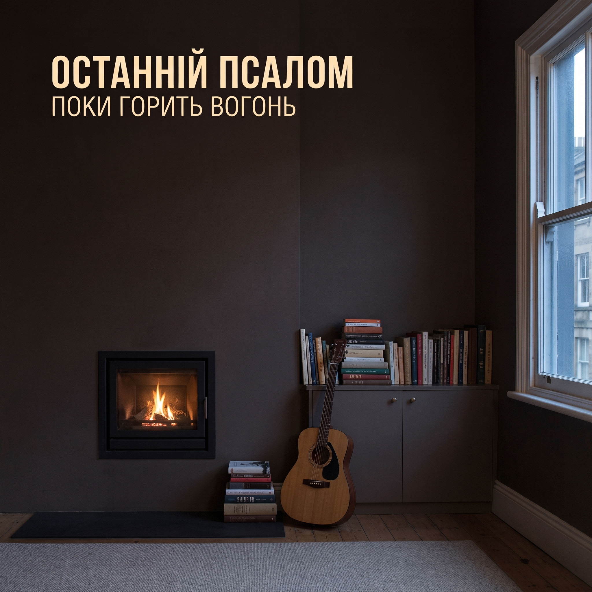

P · 15

Останній Псалом
Акустическое регги · Рутс-регги
СКОРО НА КАНАЛЕ
«Останній Псалом» — независимый украинский музыкальный проект Дана, соединяющий акустическое регги, личную лирику и духовные размышления. Тёплый мужской баритон, акустическая гитара и мягкий регги-ритм несут песни о любви, потерях, надежде, свободе и свете, который продолжает жить внутри нас.
СКОРО НА КАНАЛЕ
Apple Music
Spotify
YouTube Music
TIDAL
Amazon Music
SoundCloud
Ссылки на стриминговые платформы появятся ближе к релизу.
СПИСОК ТРЕКОВ
13 ТРЕКОВ
- 01 Нитка між нами
- 02 Прощавай, мій світе
- 03 Там, де сходить сонце
- 04 Крила над землею
- 05 Сіль і сонце
- 06 Дорога без кінця
- 07 Тепло в долонях
- 08 Вітер несе нас
- 09 Поки горить вогонь
- 10 Будь зі мною
- 11 Поки горить вогонь (Dub Version)
- 12 Крила над землею (Dub Version)
- 13 Вітер несе нас (Dub Version)
Акустическое регги · Рутс-регги
13 Треков